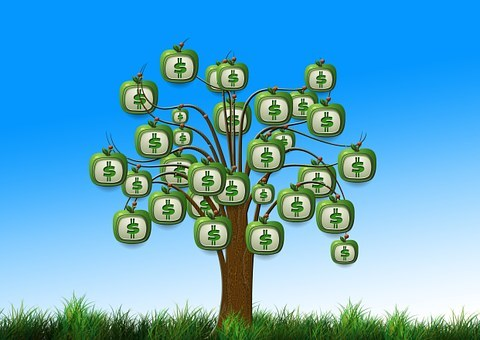
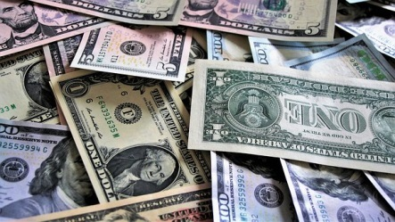

| FXでおっさんの夢を叶えよう！ 勝つための四流投資法 | |
| ろひもと理穂 | |
| (2019) | |
「 FX でおっさんの 夢 を叶えよう！勝つための四流投資法 」
モデリングするなら
資金が乏しくても
勝てるマインドを選べ！
著者 ろひもと理穂
「こんにちは、こちらに川瀬勝先生がいらっしゃると聞いてお伺いしたんやけど」
「はあ、川瀬でしたら、私ですが何か？」
「ああ、あんたが川瀬先生か！ 意外に普通のおっさんやな...... いや、失礼。わしは斎藤、斎藤勇気と申します！ 川瀬先生のお力をお借りしにきました！ どうか助けてください！」
「とりあえず頭を上げていただいて。いきなり助けてほしいと言われても...... いったいどんな要件なんでしょうか？」
「 F X です」
「 F X ？」
「業界屈指の名トレーダーで、メンターとしての指導力も素晴らしいと聞いとります。身勝手なお願いなのは重々承知です。どうか、川瀬先生のお力で、わし を F X に勝てる男にしてください！」
「なるほど、そういうことですか...... 申し訳ありませんが、お引き取り下さい。私 は F X の指導をやめたんです。どうぞ他の方を当たってください」
「これまでもいろいろな先生から教えを受け、様々なセミナーに参加し、たくさんの書籍を読んできた。けど、まったく勝てませんのや」
「でしたら、他の資産運用の方法を試された方がよいでしょう。なに も F X に固執する必要もないでしょうから」
「わしはどうして も F X で勝たなければならん。勝たんと夢は叶えられん。だから、どうかお願いいたします！ このとおりや」
「そう言われても......」
「実は、田中さんから川瀬先生を頼るようアドバイスを受けましたのや」
「田中さん？ あの田中正弘さんですか？」
「そうや。ある出来事をきっかけに知り合いになりましてな。それで川瀬先生のお名前と、指導力を聞きました」
「相変わらず無責任な人だな、田中さんは。わかりました。とりあえず話だけでも聞きましょう。中へお入りください」
「おおきに！！」
「 NIS A 」や「つみた て NIS A 」、 「 iDeC o 」といった新しい投資運用や金融商品が登場している中ですが、ハイリスクハイリターンの 「 F X 」（外国為替証拠金取引）も相変わらずの人気を誇っています 。 F X のトレーダーの数は日本国内だけでもおよ そ 3 0 万人です。
「少額の資金から始めることができる」、「スマホで手軽にトレードできる」、「アベノミクス以降金融緩和で円安が続いている」、そんな環境 が F X をより始めやすくしているのでしょう。
しかし、株式で資産運用をしている人数 は 1,20 0 万人といわれていますので 、 F X よりも株式の人数の方が圧倒的に多い状態ではあります。
これは 「 F X のトレーダー の9 割は負ける 」というネガティブなイメージが強いからかもしれません。実際に参加して、強制ロスカットの憂き目をみて資金を失い退場していった人はたくさんいます。
F X で勝つことは、たやすいことではありません。一度大勝したことを盛んにアピールするサイトもよく見かけますが、例 え 1 0 万円 を1 億円にしたからといって、その後 で2 億円負けていたら意味がないのです。
F X で勝つということは、「トータルで勝つ」 ということです。それが大切な資産を運用し、次に繋がる資産形成になります。
問題は、 「な ぜ F X で勝てないのか」、「どうした ら F X で勝てるのか」 ということです。
今回は、実際に長年に渡 り F X に取り組み、多くの記事を手掛けてきた筆者が、「一般的な個人投資家が食い物にされず、勝ち抜くための戦い方」についてお伝えしていきます。
ぜひ、トータルで勝てるトレーダーになるためのヒントにしていただけたらと思います。
◆注意事項
株式取引 、 F X には常に価格変動に伴うリスクがあります。本著作物に記載されている情報は、あくまでも参考として活用するもので、運用利益や投資資金を保証するものではありません。
本著作物の情報は 、 201 9年1 月時点になりますので、実際に投資をする場合は、最新の情報をお調べいただけますようお勧めいたします。
目次
「それで、斎藤さんは、どんなビジネスをされているんですか？」
「こう見えても関西 で I T 関連のシステムエンジニアをしとるんですわ」
「それと外貨取引とどういった関係が？」
「いや、本業とは直接の関係はないんや」
「で は F X は副業ということですか？」
「今はまだ副業の段階ですが、結果が出せるようになったら専業トレーダーになりたいと考えとります。それがわしの夢です！」
「 F X を始めてどのくらいの期間になりますか？」
「3 年やな。今年 で4 年目っちゅうことや」
「失礼ですが、これまでの損失額は？」
「うーん......」
「どうぞ気になさらずに。ここにはあなたと私しかいませんから」
「だいた い 30 0 万ほど......」
「まあ、お金の価値観は人それぞれですが、そこまでの損失額ではありませんね」
「ただな、他に現状 で 5 0 万ほど含み損を抱えていますんや。マージンコールがかかっていまして、昨 日 10 0 万ほどローンをして追証したとことでんがな」
「ローンに手をつけたということは、もう貯金も底を尽いたということですね」
「そうや。マイホームのローン が 7 5 歳まで残ってる。マイカーローンもありまんねん。それに子供の教育ローンも......。返済が追いつかない状態なんですわ」
「でしたら、なおさら手堅く生きていくべきでしょう。家を売るなり、土地を売るなり、車を売るなりしてローンの負担を軽減し、地道に働いて、時間をかけてでも返済していくのがベストだと思いますが」
「そりゃ何度も田中さんに言われました。そやかて、このままでは悔しくて。地道に働くのが嫌だっちゅうわけやありません。夢を諦めるのがいやなんですわ。田中さんには、だったら川瀬先生のモデリングすべきだとアドバイスを受けました」
「モデリングですか......」
ビジネスシーンだけでなく、勉強でも、スポーツでも、芸術でも、成果を出すための手法のひとつとして「モデリング」が用いられるケースがよくあります。モデリングとは心理学用語ですが、簡単に言うと、「対象の真似をする」ことです。
モデリングでは対象の仕草を徹底的に真似ます。口調、姿勢、表情、視線、歩き方まで観察して同じことをするのです。これは表面的だけでなく、内面にも注目することになります。感情や信念をイメージして対象のマインドも真似るのです。
そうすることによって、「これまでになかった視点」を得ることができ、「成果を出すことのできる言動」ができるようになります。そして、「自分もできる」という自信を持つことができるようになるのです。
ですから「成功者をモデリングする」という手法は有効です。
FXでも「成功者」といわれているトレーダーや、そう自称するトレーダーは大勢います。そしてその人たちがセミナーを開催したり、動画やサイトなどでトレードの手法やマインドを紹介しています。
モデリングをするなら格好の機会といえるでしょう。
しかし、それでもFXで負ける割合は全体のトレーダーの80％～90％にのぼります。勝てる人はごく一部にすぎません。
理由は 「肝心な部分がモデリングできていない」 からです。つまり、真似した「つもり」で満足してしまっているのでしょう。手法だけ真似をしても勝てません。マインドまで徹底的に真似をしなければ成果は出ないのです。
成功者たちはどれだけ緻密にそのマインドを表現してくれているのでしょうか？
伝えきれていないこともあるでしょうし、聞き手が勘違いして受け止めてしまっていることもあるでしょう。成功者をモデリングすることは、FXで勝つこと以上に難しいことなのかもしれません。
「川瀬先生お願いします！ ぜひモデリングをさせてください！」
「はあ、普通であればすぐにお断りするのですが、田中さんのご紹介ということでしたら、無下に断ることもできませんからね...... あの人には借りがありますから」
「ホンマですか！ おおきに！！ ありがとうございます！！」
「ただし、中途半端にモデリングしても火に油の状態ですから、とりえずモデリングは頭の中から捨て去ってください。代わりに、どういった手法やマインド で F X に取り組んでいるのかを確認して、修正点をアドバイスします。それでどうでしょうか？」
「それで結構です！！ 川瀬先生のアドバイスを直接受けられるのでしたら、それ以上を望むべくもありません。どうぞ宜しくお願いいたします」
「では、早速、な ぜ F X に勝てないのか、その原因についてお聞きします」
「 F X で勝てない理由を、斎藤さん自身は把握されているんですか？」
「そうやな、何点か思い当たる節はあるな......」
「具体的には何ですか？」
「損切りがなかなかできんのや。含み損が出ても、為替レートはいずれ戻ってくるんじゃないかと思ってしもうて......。含み益が出た場合は、我慢できずにすぐに利益確定してしまうしな。もう少し粘ればまだまだ伸びたのにと後悔することが多い」
「なるほど...... 典型的な損大利小ですね」
「負け分を取り戻したいから、時間があれば何度もエントリーしてしまう。できるだけ利益を出したいので、ポジションも限界まで保有してしまうんや。それで証拠金維持率をすぐに割り込んでマージンコールがかかり、強制ロスカットやな」
「お話を聞いている限りだと...... 率直に言っ て 9 9 ％勝てないですね」
「やっぱりそうやろな」
「原因がわかっているのに改善できていないことが、最大の問題です」
「そうやな。わかっとるんや。わかっとるけど、どうしても感情的になってまう」
「感情的になると、負けるのが相場です」
「裁量トレードよりもシステムトレードがええんかもしれん。自動売買ツールに切り替えるべきやろか？」
「まあ、結果は変わらないでしょうね。むしろ手数料を高く取られる分だけ損失が大きくなることが予想されます」
「なんでや？ 自動売買した方が勝率は上がるっちゅう話やで」
「...... 斎藤さんはどんな目標を立てて 、 F X をされているんですか？」
「も、目標？ それはもちろん稼ぐためや」
「どのくらいの利益ですか？」
「できれば大いに越したことはないな」
「つまり年利をどのくらいにしたいのか、月利をどのくらいにしたいのか、決まってはいないということですか？」
「年利...... まあ、そうやな。そういう細かいことは気にせえへん性格や」
「それが斎藤さんの勝てない原因でしょう。目標が曖昧だから勝てないんです。だから無駄にエントリーして無駄に負ける。損切りができなくて含み損が膨らむ。利益確定が早くなるんですよ」
「月 利 20 0 ％を出せるというセミナーに参加したこともある。そういった教材を購入したことがある。けど、結局それこそ無駄やった！」
「なるほど、それで目標の設定までやめてしまったわけですか」
「わしもさすがに月 利 20 0 ％を継続できるなんて話、まともに信じていたわけやない。ただ、月 利 10 0 ％はいけるかと思っとった。それぐらいは楽勝だというサイトもよく見たさかいな」
「月 利 10 0 ％ということは、単純に資金が倍になるということですね」
「そうや 。 F X はハイリターンな投資運用やかなら、それぐらいは可能だと思っとったんや」
「しかも、複利ですよね」
「ああ」
「つまり 、 10 0 万円の資金が 、1 ヶ月後に は 20 0 万円 。2 ヶ月後に は 40 0 万円 。3 ヶ月後に は 80 0 万円 。4 ヶ月後に は 1,60 0 万円 。5 ヶ月後に は 3,20 0 万円 。6 ヶ月後に は 6,40 0 万円 。7 ヶ月後に は1億 2,80 0 万円ということになりますね」
「確かにそれを聞くと夢のような話やな」
「斎藤さんには 現実的な目標が必要 です。だから夢と現実の境が曖昧なんですよ。偉大なトレーダーであるウォーレン・バフェット氏の会社の月利はどのくらいかご存知ですか？」
「いや、まったく知らん」
「では、どのくらいだと思います？ 世界一優秀な投資家ですよ」
「そうやな。月 利 9 0 ％...... いや、月 利 8 5 ％ぐらいやろうか」
「まったく違います」
「もっと低いっちゅうことか？」
「そうです」
「じゃあ 、 5 0 ％かな 。 1. 5 倍になるゆうことや」
「なるほど。しかし、それも不正解です。 正解 は 1. 6 ％ になります」
「なんやて？ 1. 6 ％？ それやと 、 10 0 万円の資金があって、月 に1万 6,00 0 円の利益しかないっちゅうことやんか」
「そうです。それが現実です。だからこそ、まず は 1. 6 ％を目指すべきなんですよ。半年続けることができた ら 2. 0 ％な り 3. 0 ％まで上げてもいい。ちなみに年利がプラスになれば、それがわず か 10 0 円であったとしてもトップクラスのトレーダーの仲間入りです 。 F X の世界はそれだけシビアなんです」
「月 利 1. 6 ％なんて勝ったうちに入らないやないかい。ガキのお年玉ちゃうんだぞ」
「そうですか？ それでもいい方だと思いますよ」
「何と比べていい方やねん」
「銀行の定期預金ですよ。メガバンク の1 年定期預金の年利 は 0.0 1 ％です 。 1. 6 ％といったらそ の 16 0 倍です。年利で考えた ら 19. 2 ％ですよ。実 に 1,92 0 倍です」
「そりゃそうかもしれんけど......」
「斎藤さんには、ひとつ覚えておいてほしい言葉がありますね」
「なんやねん」
「欲張りは身を滅ぼす」
「やかましいわ。そんな超超低金利と比べて良かったからといって喜べるかい。こっち は 50 0 万は勝たないかんのや。月 に1万 6,00 0 円勝ったところで、何年かかるんじゃ」
「まあ 、 10 0 万円の資金で複利計算していくと 、 1 0 年 で 57 9 万円まで膨らみますね」
「 1 0 年かけてようやく借金返済か。しかも飲まず食わずで生活したと仮定した計算やないかい。そんなもん無理や」
「じゃあ、月 利 5. 0 ％だとどうです？ 年利 で 60. 0 ％です」
「おう、それや。それだ と 1 0 年後にはどうなっとるんや？」
「そうですね 。 1 0 年だとおよ そ1億 1,00 0 万円ぐらいです」
「い 、1 億！？」
「ええ、ちなみ に4 年 で 65 5 万円まで到達しますよ」
「けど専業トレーダーでは生きていけんな。生活費は別に稼いでの話やろ」
「まあ、税金分も加味してませんが。利益 の 20.31 5 ％は税務署に持って行かれますからね」
「そやな、それでも月 利 5. 0 ％で 、 1 0 年 で 10 0 万 が1 億になるんかいな。信じられん」
「月 利 5. 0 ％でいいと考えると、今までのトレードの手法とは大きく変わってくるはずです」
「ホンマや 。 10 0 万の資金があって、月 に5 万勝てばいいんだったら無理なトレードはする必要はない。下手すりゃ、週に一度のトレードでも充分や」
「そうです。自分が勝てそうな状況だけ参加すればいいんです。それが、休むも相場ってことですよ」
「うーん...... そうやったのか」
「月 利 5. 0 ％を確保するためには、どれくらいのポジションが必要なのか、どのくらいのリスクリワード・レシオで設定するかです」
「なんやったけ、そのリスクワードなんちゃらって」
「リスクリワード・レシオです。利益分を損失分で割った数値ですね。例えばリスクリワード・レシオ が 2. 0 であれば、損失分 の2 倍が利益分になります。つま り 1 0 万円の利益で 、5 万円の損失だとリスクリワード・レシオ が 2. 0 で収支がプラ ス5 万円になりますね」
「5 万じゃなくて 、 1 0 万勝たんといかんのかい」
「そりゃそうですよ。常に勝てるわけではありませんからね。負ける時は負けます。大切なことはその負け分をどこまで抑えられるかということです。それが損切りです」
「目標が明確に決まっていれば、冷静に損切りもできるっちゅうことか」
「例え ば 50pip s の含み損で損切り 、 100pip s の含み益で利益確定 。 2 0 回トレードして 、 1 0 回勝つ、つまり勝 率 5 0 ％で目標達成になりますね」
「 50pip s で損切り 、 100pip s で利益確定か...... いつも真逆なことをしとったわ。しかしそこまで我慢できるやろうか」
「仮 に 5Lo t のポジションを保有するのであれば 、 20pip s×5＝ 100pip s になります」
「 20pip s であれば、ちょっと待っていればいくか」
「ただ 、 10pip s×5＝ 50pip s で損切りになりますが」
「 10pip s で損切り？ そんなのすぐやないかい。損切りばっかり続いて損切り貧乏や」
「ですから 自分の勝てる自信のあるタイミングだけ参加 するんです。もちろん中期的なトレードでも問題ありませんよ 。 2Lo t のポジション で 50pip s になったら利益確定。あまりボラティリティが高過ぎない通貨ペアがいいですね。流動性が高いメジャー通貨を選ぶべきです。その方がテクニカル分析も通用しやすいですし」
「ちゅうことは米ドル、ユーロ、日本円絡みかい」
「それが無難でしょう。下手にイギリスポンドやトルコリラなどに手を出すと焼けどしますからね 。 50pip s であれば、米ドル／日本円 （ US D／ JP Y ）でも充分に一日で動きますよ」
「け ど 25pip s で損切りか」
「斎藤さんが勝てるようになるかどうかは、目標を明確にすることと、 自分で決めたルールをいかに厳格に守っていくか です。今まではそのどちらもできていませんでした。だから勝てなかったんです。そこを徹底的に意識して変えていく必要があるでしょう」
「目標設定の必要性も、ルールを厳守する重要性もよくわかった。しかし、川瀬先生、わしはこれまで損切りしなくて も F X には勝てるっちゅう話を聞いてきたで。川瀬先生には、損切りしなくても勝てる方法はないんかい？」
「そのフレーズ、確かにサイトではお題目のように見かけますね 。 F X に勝つのに損切りはいらないとか、損切りするから負けるとかですよね」
「そうや。損切りしなくてもいいんやったら、それに越したことはない」
「それにはまず為替相場の特徴を知っておく必要があります。相場は基本的に二つに分けられます。もみ合いの状態と、強いトレンドが発生している状態です。斎藤さんはどちらの傾向がより強いかご存知ですか？」
「それは、もみ合いやろ。強いトレンドなんてそう簡単には発生しないからな」
「そうですね。相場 の 8 0 ％はレンジ相場といわれています。一定のレンジ内で上下を繰り返している状態です」
「それと損切りとどういう関係があるんや？」
「つまり レンジ相場であれば損切りする必要がない ということです。下がっても上がってくる、上がってもまた下がってくるんですからね。損切りするだけ無駄だといえます」
「ということは、レンジ内に収まるのなら損切りせずに塩漬けしておいて、レンジから飛び出したら損切りするっちゅうことか？」
「その通りです。ただしレンジの設定は、参考にするローソク足チャートの期間によります。日足チャートと、月足チャートではレンジが変わってくるからです。日足チャートの方がレンジは狭く、月足チャートの方がレンジは広くなってくるでしょう」
「どのくらいの幅になるんや？」
「そうですねー。米ドル／日本円 （ US D／ JP Y ）の日足チャートだと、底 が 9 9 円、天井 が 12 5 円というところでしょうか。月足チャートだと底 が 7 7 円、天井 が 13 5 円ですね」
「ボラティリティが低い米ドル／日本円 （ US D／ JP Y ）ドルでも 、 2,600pip s のレンジか...... 月足だ と 5,800pip s やないか」
「そうです。ですか ら 5,800pip s の含み損に耐えられるだけの証拠金が用意できるのなら損切りする必要はありません。米ドル／日本円 （ US D／ JP Y ）が一方的に上がり続けたり、下がり続けることなどありませんからね。強いトレンドが発生しても、これだけのレンジを想定しておけば損切りしなくても大丈夫です」
「 1Lo t のポジションだとして、含み損 が 5 8 万か。これ で 2Lo t だ と 11 6 万...... 確実に強制ロスカットになるやないか。国内 の F X 業者の強制ロスカットラインは高めや」
「真ん中の価格でエントリーしておけば 、 2,900pip s で充分カバーできます。それな ら 2Lo t で も 5,800pip s ですから耐えられるんじゃないですか？」
「つまり両建てするっちゅうことか」
「損切りしないのならそうなりますね。ただしそこまで広いレンジだと到達するのに数ヶ月から数年かかります。かなり長期の運用になりますよ」
「そんな悠長なことはしてられん。月 利 5. 0 ％は確実に達成しなければならんのや」
「でしたらある程度のレンジに絞って逆張りで利益を重ねつつ、トレンドが発生した際は含み損に耐えるしかありませんね。レバレッジにもよりますが、保有するポジションの必要証拠金 の 1 0 倍の余剰金があれば可能です」
「 10 0 万円分のポジションを持つためには、証拠金 は 1,00 0 万円必要っちゅうことかい」
「ええ。だか ら F X は資金が潤沢であればあるほど有利 なんです 。 F X にどうしても勝ちたければ、それだけの資金が必要です。細々とした頼りない資金で投資運用するから、あっさりと倒れてしまうんですよ。資金不足、それが斎藤さんの勝てない理由のひとつでしょう」
「じゃあ、なにかい、川瀬先生は、資金があれ ば F X に勝てる、資金がなけれ ば F X に負けると言うんかい！」
「そこまで極端なことを言うつもりはありませんよ。その可能性が極めて高いということです」
「そやけど、実際 に 1 0 万 を1 億にしたり 、2 億 、3 億にしているトレーダーもおるやないか！ それはすべて作り話っちゅうことか？ すべて嘘ちゅうことか！？」
「いえ、現実にそれだけの利益を出している人もいるでしょうね」
「ほらみい、いるやないかい。資金が無くても勝てるちゅうことの証明や」
「それは、宝くじ で 1 0 億円当たるのと同じ話ですよ」
「なんやて？」
「確か に1 億 、2 億円と勝つ人はいるでしょう。ただし、毎 回1 億円勝っているわけじゃない 。1 億円負ける時もあるでしょう。しかし、そんな大敗はいちいちサイトに掲載しない。基本は美談しか書きませんよ。じゃないとユーザーに夢を見せられない。夢を見せられないとアフィリエイトの売り上げも増加しませんからね」
「何が言いたいんや？」
「1 回の大勝を大袈裟にアピールして、いか に F X が稼げる金融商品なのかを印象付けるのが狙いということです。ハメルンの笛ですよ。高らかに吹けば集まる。斎藤さんのような人たちがね」
「わしが踊らされているだけっちゅうことか！」
「そうですよ。それが現実でしょう？ 1回1 億円稼いだからなんだというんです？ そのため に 1 0 億円を費やしているかもしれない 。1 億円勝った翌月に は2 億円負けているかもしれない。そんな広告に踊らされても馬鹿を見るのは憐れな子羊たちだけです。強者は餌に集まってきた子羊をむさぼり食べる」
「わしらを食いもんにしとるんか？」
「ええ 。1 億円稼ぐ人を出現させるためには 、1 億円負ける人達が必要です 。 F X 業者の運営費、人件費も考えたら勝ち分をはるかにしのぐ負け分が必要になる。それが子羊たちの末路なんです」
「じゃあ 、 F X なんてやるだけ無駄やないか！」
「それは月 利 1. 6 ％に価値を見出せていないからですよ 。 10 0 万円にとって は1万 6,00 0 円に過ぎませんが 、 10 0 億円だったらどうです？」
「1億 6,00 0 万や」
「そうです。毎月確実 に1億 6,00 0 万円稼ぐことができるとしたら、こんなに美味しい話はない。しかし、実際にそれを実現させてもアピールなんてしませんよ。真似をする人が増えたら月 利 1. 6 ％すら難しくなるからです。本当に稼いでいる人たちはいたって静かにしているものです。勝てる手法なんて絶対に他人に教えない」
「つまり、アホな夢など見ずに、毎 月1万 6,00 0 円の儲けで満足しろっちゅうことかい！」
「それが身の丈にあった投資運用ですから。そこで欲張ってルールを無視したり、感情的になったら月 利 1. 6 ％すら達成できないんです」
「金持ちは金持ちのまま、貧乏人は貧乏人のままやないか......」
「お金持ちがお金持ちで居続けるには、それを支える貧乏人が必要なんです。それが、人類が何千年もかけて創り出し、築き上げてきた文化なんですから」
「諦めろ、そう言いたいんか？」
「うーん、そう言っても斎藤さんは諦めないでしょう？ だけどひとつ肝に銘じておくべきです 。 1 回の大勝ちで騒いでいるような連中から学ぶことなんてない ってことを」
「しかし、川瀬先生はさっき話をしとったやないか、月 利5 ％を維持すれ ば1 億まですぐに到達できると」
「言いましたねー。でも月 利5 ％を常に維持できると思いますか？ まず無理です。だって普通にやれば 、5 ％勝つ月もあるでしょうが 、 1 0 ％負ける月も出てきます。そしたらどうします？ 負け分を取り返すの に 1 5 ％勝たなければならない月も出てくる。すると無理なトレードをし て 5 0 ％負けるかもしれない。歯車は狂って、もう計画はむちゃくちゃです」
「月 利5 ％を死守すればいい。それならできる」
「わかりました。とにか く F X で大勝したと語る人から学ぶことはない、と知っておいてもらえればそれで充分です」

「それじゃあ何か、いろいろと開催されてい る F X セミナーには参加しても意味ないっちゅうことか？」
「意味がないこともないですよ。独りでトレードばかりしていると、どんどんと視野が狭くなりますからね。セミナーに参加して、自分と同じような目的でトレードを頑張っている人がいることを実感できることは心強いでしょうし、そういった人たちと 交流して刺激を受け合う機会も大切 だと思います」
「そうやない。セミナーに参加して、指導を受けても勝てるようにはならんということか？」
「だって、勝つ人が増えたらその分だけ自分の利益も減るんですよ。そんなリスクをわざわざ冒しますか？」
「現にプロのトレーダーが高額セミナーを開催しとるやんけ！ 鬼の形相でぎょうさん参加しとるで。その努力は無駄だってことなんか？」
「まあ、それで勝てるんだったら、誰も損なんてしないでしょうね」
「じゃあ、何のための高額セミナーなんや！？」
「それは参加する人のためじゃなくて、開催する人のためのものだってことじゃないですか？ 参加者が増えればそれだけ収入が増えるんですから。セミナーの内容も、いつの間にか話がすり替わって高額金融商品の紹介や、さらに高額な塾への勧誘になっていくケースも多いんですよ」
「貧乏人は、そこでもやっぱり食いもんにされるんか」
「 F X のトレードの勝率はプロのトレーダーでもいいと こ 4 0 ％ぐらいです。ま あ2 回 に1 回は誰でも負けるんですよ。だから時間をいくらかけても損失が膨らむ時がある。むなしいと思いませんか？ 時間をかけ、精神力を削って、それなのに損失だけが膨らむって。ブラック企業に勤めていたって、働いた分は少なくともプラスにはなるでしょう。でも投資運用は違う。逆にマイナスになることもあるんです。特 に F X はハイリスクですからね。そう考えたらリスクを冒してトレードに時間を費やすより、勝つためのヒントを必死に探している人たちを集めて、有料でセミナー開催した方がよっぽど効率良く稼げますよ」
「つまりトレードに勝てないか ら F X セミナーを開催してるっちゅうことか」
「まあ、半分半分でしょうね。意義のあるセミナーだってありますから。それこそ 無料のセミナーだって、参加すると勝率が上がるものはたくさんありますよ 」
「有料でも意味ないのに、無料で成果が出るっておかしいやろ」
「それは主催者側の狙い次第ですよ。単純に参加費用や追加のオプション申し込みで利益を出そうとしているセミナーもあれば、無料でもユーザーからの信頼度を高めるために開催しているセミナーもあります。大手証券会社の市場動向についてのセミナーなんてその典型でしょう。 有名アナリストが分析したり、今後の市場を予想してくれます からね。充分聞く価値がありますよ」
「うーん......」
「どうしました？ 高い金を払えば、その分だけ勝てるようになるのかと思っとったわ」
「そうではないことは経験済みなんじゃないですか？」
「そうやな...... 絶対に勝てる手法を教えますっていう教材を 、 5 0 万で購入したことがある」
「絶対に勝てる手法 が 5 0 万円とは、またずいぶん安いですね。僕だった ら5 億円は要求しますけど」
「 5 0 万なん て1 ヶ月で取り戻しておつりが出るって言うとったわ。実際はなんも勝てんかった」
「よく文句を言わなかったですね」
「言うに決まっとるだろうが。そしたらあなたが手法をしっかり理解していないからだって言い返されたわ」
「あの手の人たちは、自分を正当化する術だけには長けていますからね」
「逆に、もっとわかりやすい教材があるから、特別 に 2 0 万で売ってもいいって言われたわ」
「まさか購入したんですか？」
「そこまでアホやない。まあ 、 5 0 万な り 10 0 万なり出せば、簡単に勝てる方法が身に付くと思っとったわしも充分アホやけどな」
「別に賢ければ勝てるってもんでもないですからね」
「そうなんか？」
「だって勝つために必要なものは、豊富な資金とルールを厳格に守れる自制心ですから。今の時代、いくらで も A I が自動売買してくれますよ。計算速度や売買速度 で A I に勝つことは不可能でしょう」
「川瀬先生と話をしとったら、わしのような人間は絶対 に F X では勝てんような気がしてくるわ」
「じゃあ、勝つための作戦会議でもしましょうか？」
「勝つための作戦会議やと？ それじゃ、それを待っとったんじゃ！ 川瀬先生、ぜひ宜しくお願いします！！」
「とりあえず、な ぜ F X に勝てないのか、勝っているトレーダーはどのような人たちなのかについてここまでお伝えしてきました。お聞きになって、斎藤さんのご感想はいかがですか？」
「そうやな...... 簡単にどうにかなると思っとった自分に気づいたわ。わしが思っとったよりもはるかに厳しい世界やった。甘く考えとったな」
「例 え 10 0 円でも 、 20 0 円でもお金を稼ぐってことは楽なことではありません。楽をしようとすれば、その分いろいろなものを失っていきます」
「川瀬先生は、わしにもっとシビアになれと言いたいわけやな」
「誤解してほしくないのは、現実の厳しさを知っておくことが必要だということであって、その厳しさを前にして委縮したり、挑戦を諦めるのは私の意図するところではありません。むしろその厳しさを楽しめる余裕が必要なんです」
「追い詰められとるわしに、そんな余裕は無いやろ」
「それじゃあ勝てないんですよ。 証拠金にも、心にも、常に余裕が必要 なんです。現実を知らないで猪突猛進するのは蛮勇ですが、虎穴に入らざれば虎子を得ずと言いますからね。 細心の注意を払いながら果敢に飛び込んでこそ目標を達成することができます 。それ が F X で勝つうえで 最も重要になるリスクマネジメント です」
「リスクマネジメントか...... よく聞く話やけど、どうすればいいのか、わしの頭の中はごちゃごちゃや」
「それほど複雑な話ではありませんよ。要は勝つために余計なことはしないことです 。 F X に勝つということはどういうことか、斎藤さんはおわかりですか？」
「利益を出すっちゅうことやろ」
「ええ、そうです。しかし 、 F X では常に勝つことはできない。むしろ負ける回数の方が多くなるでしょう」
「それじゃあ、利益は出んやろ」
「いえ、それでも利益を出すことはできるんです。先ほど話をしたリスクリワード・レシオですが、これ を 2. 0 に設定するということは、勝率 が 3 3 ％でも利益を出すことができます」
「勝率 が 3 3 ％。ってことは 、3 回 に1 度勝てばいいということかい？」
「その通りです。もちろん勝ちの回数が多いほど利益は出るでしょうが、そこにはあまりこだわらない方がいい 。 F X で勝てるかどうかは、トータルで勝てるかどうかです。常に勝つことは不可能ですが、トータルで勝つことは可能です。そのために は2 回の負けを楽しむことです」
「2 回負けてもいいっていうんだったら、確かに心に余裕ができる」
「そうです。 心に余裕ができるからこそ、感情に左右されず、的確な損切りができるようになる んです。斎藤さんは利益を出したいという気持ちが先走って、目先の勝ちにこだわり過ぎていました。だから損切りできなかった。 大切なのは目先の勝利ではなく、大局での勝利 です。仮に資金が乏しいとしても、その立ち位置は絶対に必要になります」
「そうか......」
「成功者から学ぶとすればはそこです。そのマインドこそモデリングすべきなんです」
「そうすれば資金が乏しくてもトータルで勝てるのか？」
「......」
「川瀬先生？」
「勝てると断言できるわけではありません。ただし、勝てる可能性は確実に高まります。とにか く1 ％でもその可能性を高めていくことが必要です。これから資金が乏しくても勝つための策をご提案します。大局で勝つためという視点でお話を聞き、考えてみてください」
「わかった。どうぞ宜しくお願いします！」
「目標をはっきりさせましょう。月 利 5. 0 ％。年 利 60. 0 ％。ここが斎藤さんの目標です。これを達成することが、すなわ ち F X に勝つということになります」
「わかった」
「 F X のウリは、少額から始めることができることと 、 2 4 時間トレードができることになります。だからサラリーマンや主婦も片手間で参加できるんです」
「わかっとる」
「しかし、これ は F X のメリットであり、デメリットでもあります。少額から始めると、大きく勝つためにレバレッジを最大に活用し、ポジションを持てるだけ保有してしまう。そして暇さえあればエントリーすることになる」
「それをしたら負けるっちゅうことやろ。さっき聞いて納得したわ」
「トレードには、超短期で売買を繰り返すスキャルピングと、短期のデイトレード、中期から長期のスイングトレードに分けられます。今までの斎藤さんはどこに該当していましたか？」
「まあ、はっきりとこれと決まっとったわけやないけど、どれかっちゅうたらスキャルピングやな」
「そうですか。それでは、こうしましょう。 超短期トレードはやめる 」
「なんでや？」
「単純に超短期の値動きは予測しにくいからです。ローソク足チャートだ と1 分足 や5 分足をよく使用することになると思いますが、ダマシも多い。経験豊富なプロのトレーダーにとっても困難なトレードになります」
「そうなんか」
「テクニカル分析用のインジケーターも様々用意されていますが、それよりもトレンドを掴んでエントリーした方が勝ちやすい。ファンダメンタルズ要素とテクニカル要素をバランスよく活用できるトレードにしましょう」
「デイトレードか？」
「確かに日をまたかずにポジションを決済してしまった方がリスクは軽減できますね。ニューヨークタイムがクローズして、オセアニアタイムがオープンしたあたりは流動性も低くなって、ヘッジファンドがストップ狩りを仕掛けてくる可能性がありますから」
「朝起きて、チャートの下ヒゲだけ異常に伸びとって強制ロスカットに遭ったことが、何度かあるわ」
「しかし、デイトレードだとスワップ金利の利益が出ない」
「スワップ金利なんておまけやろ？」
「勝率 を1 ％でも高めるには利用しない手はありませんよ。なにせポジションを保有していれば利益が出せるんですから。扱う通貨ペアによってはインカムゲインも重要視しましょう」
「ちゅうことは、デイトレードとスイングトレードの中間って感じか？」
「そうなりますね。テクニカル指標はあくまでもレジスタンスラインとサポートラインを重視しましょう。メインは日足チャート、週足チャートです。経済情報、政治情勢はタイムリーに反映できるよう、アンテナを立てておいてください」
「ごっつ基本的なやり方やな。そんなんでトレンドに乗れるんか？」
「乗ろうと思っても、トレンドにはそう簡単に乗れるもんじゃありませんよ。ブレークしてもダマシの可能性だってあります。しか し3 回 に1 度勝てればいいんです。乗れなかったらすぐに損切りする。その割り切り方が重要になります」
「損切りは苦手やけど仕方ないの」
「 100pip s を損切りのラインとしましょう。利益確定はリスクリワード・レシオ が 2. 0 なんで、倍 の 200pip s です」
「 100pip s っていうても、雇用統計の発表直後だったら一瞬やろ 。 100pip s 下がったらと思ったら、すぐ に 100pip s 上がったりするからな」
「重要経済指標の発表直後はボラティリティが高いですし、スプレッドも広がります。ストップ狩りのリスクも高まるでしょう。発表前にポジションは決済しておいて、そこでのエントリーは避けます。しばらく様子を見て、トレンドを見定めてからにしましょう」
「ボラティリティが低い状態で 、 200pip s も待ってられるんかい？」
「もちろん強いトレンドが発生している状態で、ボラティリティが高いのであればエントリーしますよ。最大のチャンスですからね」
「通貨ペアはなんやねん」
「斎藤さんは何がいいですか？」
「そりゃあ、ボラティリティが高いイギリスポンド、あとトルコリラも今は狙い目やと思っとる」
「イギリスポンドは動きが読みにくい。トルコリラは明らかに下落傾向。かといって、ショートポジションだとスワップ金利は大きなマイナスになります」
「だからトルコリラのロングポジションやろ」
「新興国通貨の底は見えない 。1 トルコリ ラ 1 6 円が大底ですが、トルコの金融情勢やアメリカの関係悪化を鑑みるとまだ底がある可能性が大です。リスクが大きすぎます。いくらスワップ金利で利益を重ねても、為替差損で吹き飛びますからね」
「じゃあ、メジャー通貨かい。まさか米ドル、ユーロ、日本円の組み合わせじゃないやろな」
「不服ですか？」
「基本すぎやろ」
「それでいいんです。アメリカやユーロの情報はタイムリーに入手できますし、取引量が大きいのでテクニカル分析もはまりやすい。互いにリスクヘッジすることもできます。ただしユーロと日本は超低金利ですから、スワップ金利を狙うなら米ドルのロングポジションになりますね」

「けどな川瀬先生、スワップ金利を狙っていくにはそれなりの量のポジションを保有せんといかんやろ。仮 に 5 0 万の資金があったとして、米ドル／日本 円 (US D／ JPY ) の現状の為替レートだった ら1 万通貨、レバレッ ジ 2 5 倍 で 10Lo t が限界やぞ。まあ、スワップ金利も変動するからどれくらい稼げるかは目安になるが、好条件 の F X 業者で も 1Lot8 0 円程度 、 10Lo t で も 80 0 円 。 3 0 日 で 24,00 0 円ちゅうとこや。それでいいんか？」
「まあ、海外 の F X 業者で代表格 の X M だと、ユー ロ/ トルコリラ （ EUR/TR Y ） の 1 0 万通貨で、スワップ金 利 5,00 0 円か ら 7,00 0 円は稼げますけどね」
「海外か...... だったら日本金融局 （ JFS A ）の管轄外や 。 X M ならレバレッジ も 88 8 倍までいけるがな 。 88 8 倍だったらまだ多くのポジションを保有できる。毎 日1 万以上のスワップ金利も狙えるやんけ 。1 ヶ月でスワップ金利の収入だけ で 3 0 万以上いくで」
「あくまでもそういう手段もあるという話ですよ。レバレッ ジ 88 8 倍で限界までポジションを保有していたら、下手したらエントリ ー 3 0 秒後に強制ロスカットです。そんな超ハイリスク論外です」
「けど海外 の F X 業者やとゼロカットや。借金返済の追証は発生せえへんで」
「確かに証拠金がマイナスになるリスクはないでしょうが、どちらにせよ証拠金の大部分を失えばも う F X の舞台から退場です。そこから先の復帰はありません」
「それは、そうやけどな......」
「スワップ金利も重要な収入源というだけで、そこをメインで狙いにいくわけではありません。ですからポジションも限界まで保有することはしないんです」
「そうなんか。わしはいつも証拠金維持率がギリギリの状態でトレードしとったからな......」
「これは非常事態の強制ロスカットに耐えるための手段です。地政学リスクによる暴落や、金融危機、政治不安による急落が想定されます」
「 200 8 年のリーマンショックのようなか？」
「 201 5 年のスイスフランショックもありますからね。あの時は急激な暴落によって取引が一時的に停止してしまって、強制ロスカットすら作動せずに証拠金がマイナスになった投資家もたくさん出ました」
「そんな数年に一度、数十年に一度のサプライズまで気にする必要はあるんかい」
「ええ。強制ロスカットになったらそこで終了です。ストップ狩りの被害は仕方ないにしても、再起不能になる損失の拡大は絶対に阻止しなければなりません。勝負はトータルで勝つことですからね」
「じゃあ、レバレッジも抑え気味か。まさかレバレッ ジ1 倍ちゅうことはないよな？」
「できるならそれでもいいですが、斎藤さんの資金では無理ですね。仮 に2 倍にし て 1Lo t 保有したところで目標は達成できないでしょう。だからレバレッジ は 2 5 倍でいきます」
「国内の個 人 F X 口座で は MA X のレバレッジやな」
「ええ。ハイレバレッジだと、確かにリスクは大きい。しかしそれはあくまでもポジションを限界まで保有した時の話です。 実効レバレッジを高くしなければ、リスクは軽減できます 」
「そうなんか？」
「余剰金に余裕ができますからね。そこがトレードの精神状態に大きな影響を及ぼすんです。レバレッ ジ 2 5 倍 、1 万通貨 で 5Lo t 保有 。 200pip s の勝ち で 1 0 万円の利益になります」
「 100pip s で損切りやから 、5 万の含み損で損切りか......」
「そうなりますね 。5 万円の含み損を未練なく損切りできるようになれば、勝算も高まります」
「3 回 に1 回勝っても 、 1 0 万の利益 に 1 0 万の損失でプラマイゼロや。浮くのはスワップ金利分くらいか」
「ですか ら5 回 に2 回は勝ちましょう。確実に利益を伸ばすことができます。とにかく焦らないことです。焦って余計なエントリーをしたり、損切りを先延ばしにしたり、利益確定を早まらないこと。そのルールを守りつつ、勝てる相場でのみ勝負をします。いいですか、斎藤さん覚えておいてください 。 F X で勝つためには、 ポジションに余裕を持つ！ これが鉄則です」
「川瀬先生、そやけど、何か当たり前の話ばっかりやないか。どれも聞いたことがある。秘密兵器的なテクニックはないんかい？」
「秘密兵器ですか？ あるにはありますよ」
「おお！ それをはよ教えんかい！！ どんな秘密兵器やねん」
「 PDC A です」
「ぴ 、 P D なんやて？」
「P、D、C、A 、です」
「なんやねんそれ。なんか凄そうな響きがするな」
「4 つの単語の頭文字ですね 。Pは Pla n です」
「プラン？ 計画のことかいな？」
「そうです。斎藤さんは目標が曖昧だったので、当然のようにプランも確立できていませんでした」
「なるほど。で 、D はなんやねん？」
「D は 、 D o です。まあ、計画に従って行動するってことですね。エントリーしたり、損切りしたり、利益確定したり、テクニカル分析したり、ファンダメンタルズ分析したりです」
「計画して、行動する。うん。おかしいことはないな。それ でC はなんや？」
「Cは Chec k です」
「チェック？ 確認っちゅうことか？」
「まあ、そうですね。分析と捉えてもらっても、反省と捉えてもらっても問題ありません。要するに、結果を踏まえて計画と行動を振り返るんです。本当にルールを守れていたのかどうか。ルールが守れていたのになぜ目標の月利に達しなかったのか。もしかすると計画や行動に改善する余地があるかもしれません」
「面倒な作業やな」
「 F X 業者によっては週次レビューが送信されてくるサービスもあります。なければ日記のように毎日のトレードを記して、その過程と結果を見つめ直します。そうすることで斎藤さんのトレードはブラッシュアップされていくんです」
「ふーん。そう言われてみるとそうかもしれんな。で、最後 のA はなんやねん？」
「Aは Actio n です」
「アクション？ あのアクション映画のアクションか？ 何か必殺技みたいなものをくり出すんか？」
「そうです。このアクションが大切なんです。この場合のアクションとは、反省を加味した改善行動のことです。こうした方がいい、ああした方がいい、それを実践してみることです。 反省はいくらしても構いませんが、後悔で終わったらそこで終了 です。反省を次に活かすことが大切なんです」
「そりゃ、そうやろうけど」
「かの発明王で、ジェネラル・エレクトリック社の創業者でもあるトーマス・エジソンはこう述べています。『私は失敗などしたことはない。ただ上手くいかない方法 を1 万通り発見しただけだ』と。損失が出ても、トータルで勝てるようになるのであれば、それは失敗ではありません。成功の基です」
「失敗は成功の基っちゅうからな」
「そのために必要なのは反省をした後に、しっかりと改善行動をすることです。これで確実に勝てる可能性 が1 ％高まります」
「え？ それで終わりかい......」
「まさか！ それで終わってどうするんですか」
「いや、そやけ ど PDC A やから、終わりやん」
「A をしたら、ま たP に戻るんです。もう一度、勝てる計画を立て直す。そして実行する。そして反省して、改善行動をします。で、また計画する」
「同じことを繰り返すっちゅうことか？」
「同じことに見えるかもしれませんが、精度が違います。中身の濃さが違います。レベルもステージも違うんです。これが 勝つため の PDC A のサイクル です 。 F X に勝つためには、このサイクルを回せるかどうかどうかになります。立ち止まり、振り返り、また前に進む。過去も、未来も、今もすべてを大切に扱います。それ が F X に勝つための秘密兵器ですよ」
「なんか、ごく普通の当たり前の話のように聞こえるんやけど...... それって基本やないか......」
「その通り、基本です。基本が一番大切なんです。算数や数学と一緒で、基本問題が解けなければ応用問題は解けません。応用問題なんて、基本問題の寄せ集めですよ。基本的な知識を一度使えば解ける問題が易しい問題で、基本的な知識を十種類使わなければ解けないのであれば超難問。それだけの違いです」
「超短期トレードはしないで、ポジションに余裕を持ち 、 PDC A のサイクルを回す。これで資金が乏しくて も F X に勝てるんかい？」
「ええ。そうしなければ勝てないですね。あとは信じてやりきることができるかどうかです」
メンター川瀬とクライアントの斎藤が作戦会議を開いてか ら1 ヶ月が経過した。今日、二人はあの日以来の対面となる。こ の1 ヶ月間の成果について、斎藤は川瀬に一切知らせていなかった。
「斎藤さんお久しぶりです。見違えましたよ。ずいぶんと痩せましたね」
「そやな、特別ダイエットしとるわけじゃないんやけど、こ の1 ヶ月 で 5k g 痩せたわ」
「ご病気か何か？」
「 F X のせいや。毎日神経すり減らしてチャート分析からトレードまでやっとるんで、ストレスで身体がおかしくなっとるんや」
「食事は？」
「毎 日2 食は食べとるわ」
「睡眠は？」
「川瀬先生の言いつけどお り8 時間寝取る。けど為替相場が気になってな。ゆっくり眠れるのは土曜と日曜の朝だけや」
「運動は？」
「それも川瀬先生の言いつけどおり、毎日朝晩 、 3 0 分はストレッチからスクワットまでやっとるわ。おかげでメタボの腹も少しはまともになったな、おおきに」
「まあ、でも顔色は悪くないですし、目の輝きも以前より鋭くなっていますね。いいことです。栄養、睡眠、運動のバランスは何事を成功させるにしても不可欠な要素ですから」
「トレードの結果は気にならんのか？」
「どうしてです？」
「まず最初にそれを聞いてくると思っとったからな。まさかわしの身体の心配をしてくれるとは予想外や」
「もちろん気になっていますよ。でも、今は結果よりも過程が重要なんです。ゴルフでも一緒です。下手なスイングで飛びようになってしまったら、ある程度までなら上手くなるかもしれませんが、そこで成長は止まります。理に適っていないスイングでは必ず伸び悩むことになるからです」
「ゴルフかい。バタバタしたスイングでも優勝しとった海外のプロ選手がいとったな」
「例外とは言いませんよ。フォロースイング後の姿勢が無茶苦茶なだけで、インパクトまでは理想的なんですから」
「まあ、そんな話はどうでもええわ。とりあえず結果報告や」
「どうぞ」
「こ の1 ヶ月の損失 は 1,100pip s 、利益 は 1,200pip s や」
「ほう、プラ ス 100pip s ですか 。1 万円の利益じゃないですか」
「レバレッ ジ 2 5 倍 で 4Lo t のポジションやからな、そ の4 倍 の4 万円の利益や」
「なるほど。すると月利はいくらになったんですか？」
「証拠 金 10 0 万で始めとるから計算しやすいわ。月 利 4. 0 ％やな」
「目標は月 利 5. 0 ％ですから、もう少しでしたね」
「途中、月 利 7. 0 ％まで到達したんやけどな。そこで止めておけばよかったな」
「でもチャンスだと思ったんですよね？」
「そうや。無理なエントリーはしとらん。中国の輸出・輸入の落ち込みが予想外だった。まさか米ドルの下落にここまで影響を及ぼすとはな」
「それも勉強ですよ。今年 の FR B は利上げに慎重のようですしね。市場全体としてはややリスクオフに傾いてます」
「何かあるとすぐに円高や」
「そうですね。米ドルはロングポジションですか？」
「スワップ金利のことを考慮したらそうやろうけど、テクニカル要素でも、ファンダメンタルズ要素でもショートやな」
「ほう。スワップ金利がマイナスになることを承知で、ショートポジションですか」
「多少のリスクは仕方ないやろ。ちなみに投資運用の鉄則はリスクヘッジらしいけど 、 F X 以外の運用もした方がええんかいな？」
「投資信託とか、株式とか、不動産とかですか？」
「まあ、そうやな」
「資金があるならいいですよ。ぜひそうしてください」
「ないわ」
「じゃあ、余計なことは考えないことです。あくまで も F X の通貨ペアでリスクヘッジしていきましょう。資金には限りがある。その限りの中で勝っていかなければならないんです。 分散投資には限界があります。できることをやるだけでも、充分にリスクマネジメントになりますから心配いりません 」
「しかし、いざ目標とルールを決めると、なかなかエントリーできんもんやな。どこでエントリーしても、相場は逆に動くんやないかって心配になってしまうわ」
「なるほど、それでお疲れ気味なわけですか」
「月末のゴトーの日やからドル不足になると思っとったら、米ドルの上値が重くてまったく動かんかったり、イギリスのブレグジットで大荒れになって円高に振れる思っとったら意外に動かんかったり。なかなか勝てるチャンスっちゅうのは、見つけるのが難しいな」
「相場に絶対はありませんからね。みんなが上がるって言ってる時が、実は下げを狙って仕掛けてくるタイミングだったりします。実際よりも噂で相場は動きますから、実際に起こった時には織り込み済みで動意薄ってこともよくある話です」
「そう考えとったら、なんや不安になってしまって、いつまでたってもチャートをにらめこしとるだけになってしまったわ 。5 日間まったくエントリーできんかった期間もあった」
「リスクを想定することは大切なことです。ポジティブシンキングだけで乗り切られるほど、甘くはありませんからね。むしろ 生き残るためには、ネガティブさも重要 なんです。私たち人間の祖先はそうして過酷な生存競争を生き抜いてきた」
「しかし、ビビっとったら前には進まれへん」
「確かに。起こりえるリスクを想定して、そこからいかに回避するのかを常に心構えしておく必要はありますが、リスクを怖れて動けないのでは結局は生き残ることはできません」
「どっちやねん」
「バランスですよ。リスクを想定しながら、前に進むチャンスを探すんです。必ずチャンスはくる。その時を逃さずに勇気を出して踏み出せるかどうかが勝負を分けます。リスクマネジメントが 、 F X だけでなく投資では肝になりますが、それは消極的という意味ではありません」
「難しいな」
「勝った負けたは時の運も関係します。どうしたって勝てない時もあるものです。 リスクマネジメントとは、要は引き際を見極めるということ ですよ。今は負けても、次に勝てる余力を残す。全力で向っていって木っ端みじんになってしまったのでは、次がないんです。それはリスクマネジメントとは言わないでしょう」
「5 日動けんのはどうなんや？」
「勝てるまで待つのもリスクマネジメントです。動かざるごと山の如しって言うじゃないですか」
「5 日動けんと、ホンマに動けんくなる。身体も心も重くなるんや」
「だからよく寝て、よく食べて、よく運動するんです。動かなければいけない時に動くためです。そこまで充実した気力を維持するためです。それもまた大切なリスクマネジメントですよ」
「そういうことか。気晴らしっていうわけやないんやな。寝ることも、運動することも意味があるのか」
「ええ。それが勝つための計画ですよ。そして今、斎藤さんはそれを実行してきた」
「で、反省してるっちゅうことやな」
「実行してみてこそわかることがあります。アウトプットしなければインプットできないこともあるんです。それが気づきです。改善の行動に繋がる核になります」
「そうか...... わしはまだ覚悟が足らんかった。徹底できとらんかった。ひとつひとつの行動に意図がなかった。それが反省や。次 の1 ヶ月はそこを改善する。それでいいのか？」
「ええ。バッチリです。こうやっていけば自然 と PDC A のサイクルを回すことができるようになりますよ」
「なんや 、 F X の勝ち方いうよりも、人生をいかに充実させるかを教えてもらっているような気がしてきたわ」
斎藤がメンター川瀬から教えを受けてから半年が過ぎていた。
この半年の間、月に一度、月初めの土曜になったら必ず斎藤は川瀬の自宅を訪れている。
「昨日の雇用統計の結果には驚いたわ。アメリカも尻に火がついた状態やな」
「だからといってすぐには円高には振れない。有事の円買いも、もはや過去の話になってきました。まあ、ジリジリと米ドル安には傾いていますが、日本もこれ以上の金融緩和は難しいですからね、日銀としても打つ手がなくて四苦八苦していますよ」
「円安になるのか、円高になるのか、強いトレンドは見えてこん状態や。しばらくはもみ合いの相場が続くんやないか」
「もみ合いは力をため込んでいるともとれます。噴火寸前の火山のようですね。おそらく今後どちらかに強く振れるでしょう」
「 E U もイギリスだけでなく、イタリアも反抗的な姿勢やかならなー。投資家としては資金をどこに託すのが得策か、判断に困るところや」
「人民元が基軸通貨となる日も近いかもしれませんね」
「そういったリスクも想定しておけっちゅうことか」
「ええ。ところで、斎藤さんのここ半年の成果はどんな感じですか？」
「まあ、ボチボチやな。一応、川瀬先生と約束しとる月 利5 ％はすべて達成しとる」
「ほう。じゃあ年 利 6 0 ％の半分は達成したということですね」
「そうやな。米ドル／日本円のリスクヘッジで、ユー ロ/ 米ドルに分散投資しとるから、大敗はないな。けどレンジ相場やさかい 、 100pip s の損切りには到達しても、なかな か 200pip s の利益確定には届かんのや。いいところまでいっても、また下がって結局は損切りっちゅうケースが何度もあったわ」
「もっと早めに利益確定しておけば良かったと？」
「ついついそう考えてしまうな。けどそれをやってしまったら、トータルでマイナスや。川瀬先生からそれだけはあかんと言われとるから、なんとか辛抱できたわ」
「斎藤さん は F X に勝てるマインドが身に付いてきましたね」
「この調子でやっていけば、いけるかいな？」
「ええ 。1 億円勝つための最大の難関は 、1 千万円のトレードの時にできたことが 、5 千万になった時にできるかどうかです。冷静さを失わず、同じことができれば勝てます」
「損切りができんかったらダメ、利益確定を我慢できんかったらダメっちゅうことやろ」
「そんなネガティブな言葉を使っていたら、自己否定感が募ってパフォーマンスを発揮できなくなりますよ。使用する言葉は極力ポジティブに、これをすればこれができるという表現を使ってください」
「どういうことや？」
「ですから、 損切りをきっちりできたら勝つ。利益確定も目標に達成するまで我慢できたら勝つ。それを自分に言い聞かすんです 。今、私は成功する途中にいると。そして成功した時のイメージをできるだけ強く持ちます。どんな光景を目にするのか、どんな賞賛の言葉を耳にするのか、肌は鳥肌がたち、心は抑揚している。それを実現する途中にいると、自分に言い聞かせるんです。そして潜在意識に刻み込む。自然と目標を達成するための考え方や行動がとれるようになります」
「自己暗示みたいなもんかいな」
「そうですね。心理学用語ではアファメーションと言いますが。人は誰かに言われたことを気にしたり、自分で思った通りの人格を演じたりするものです。 潜在意識の力はとても強い。ですからそこも味方につけることができたら、勝算はさらに高まります 」
「できることは何でもするわ」
「そうすれば確実に損小利大の取引が当たり前のようにできるようになる。負けても引き際が潔くなりますし、勝っても焦らずに本当の勝ちを呼び込むまで耐えることができます」
「損小利大か...... わかっとったつもりやったけど、それがいかに難しいことなのか、この半年でよくわかったわ。川瀬先生のアドバイスを受けてなかったら一生わからんで、負け続けていたはずや」
「5 年後が楽しみですよ」
「わしも初めて将来に希望を感じられるようになった。博打やのうて、ホンマの投資ができとる実感があるわ」
「良かったですよ。これで田中さんも一安心でしょう」
最近は、自動売買ツールやサインツールを利用してトレードするのも珍しくなくなってきました。スキャルピングにおいてはもは や A I が主力になっている状況です 。 A I の計算スピード、超高速トレードにはとても人間は太刀打ちできません。
しかし、いく ら A I の力が向上しても、生身の人間が対抗できる隙は必ずあるはずです。これから先、新しいトレードの形や、分析の手法が登場してくることになるでしょうが、一番重要なのは「トレーダーのマインド」です。
これは何 も F X に限った話ではありません。様々なビジネスの世界で同じことが当てはまるはずです。
「目標を明確にしてゴールをしっかりとイメージする」こと、そして「いかにメンタルを強くできるか」、「いかにパフォーマンスを発揮できる環境を整えるか」が本当に問われる時代を迎えることになります。
自分を変えることができるのは自分自身 です。 自分のモチベーションを高め、自己肯定感や自己効力感を高められるのも、最も効果を発揮するのは自分自身 なのです。
小手先だけのテクニックで成果を出そうとせず、成功するためのマインドをぜひ身に付けてほしいと思います。これまで成果を出せなかった人も、「諦めず、自分を変えることで、未来は変えられる」のです。
ここまで時間を割いてこのお話を読んでいただいたあなたには、ぜひ目標を達成できる、人生を充実させられるトレーダーにいただきたいです。今後のご多幸をお祈りしております。
201 9年1 月 ろひもと理穂